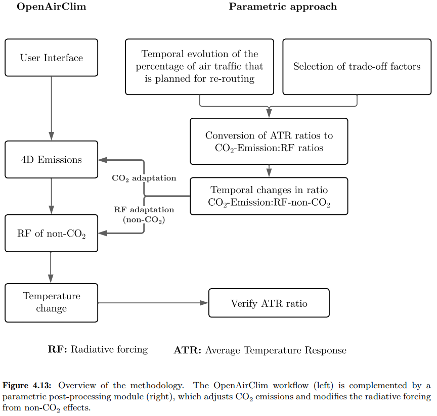

Parametric scenarios
The Parametric Module implemented in OpenAirClim follows the post-processing approach described in MSc thesis: Saleh Walie, Mitigation of aviation’s climate impact: a scenario-based parametric study in OpenAirClim, UC3M, 2025.
The following figure illustrates the methodology. The left-hand side of the diagram represents the sequence of steps carried out by the core OpenAirClim program, while the right-hand side involves the post-processing parametric approach that adapts the original workflow.

More precisely, within this methodology, the CO₂ emissions from the original inventory are adjusted, whereas for non-CO₂ species, the radiative forcing values are modified. Therefore, the core objective of the methodology is to define appropriate adaptation factors.
This post-processing method is built after the assumption that the Average Temperature Response (ATR) and the radiative forcing (RF) are related by means of a conversion factor:
where \(k\) is a factor that is depending on the emission profile, the species, and the time horizon used to define ATR.
For the two strategies, climate-optimal trajectories mitigation and cost-optimal routing, the ATR ratio is:
If the emission profile and the time horizon are the same, then the expression is simplified as:
Therefore, if ATR values associated with a pair of scenarios (e.g. climate-optimal scenarios vs. cost-optimal scenario) are available from the literature (assuming the same emission profile and time horizon), these values can be used to compute the corresponding radiative forcing (RF) ratio, capturing the change between the two scenarios. This RF ratio (for each species) can then be applied to scale the radiative forcing of a baseline inventory, in order to approximate how it would behave if it had suffered the same transformation as in the original scenario pair. The CO₂ species is a particular case: due to its cumulative nature, it is suffcient to simply scale its emissions.
The species dependent relative changes in \(\mathrm{ATR}_{20}\) for the applied strategy of the climate-optimal trajectories mitigation are derived from [6].